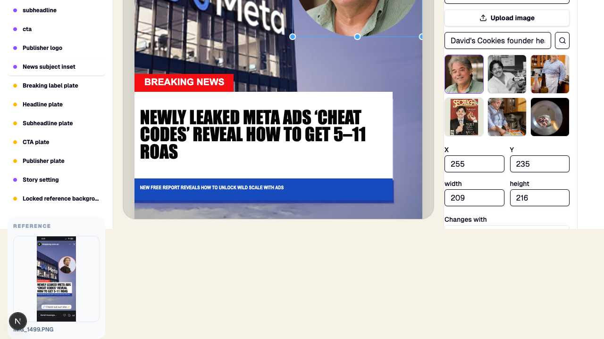
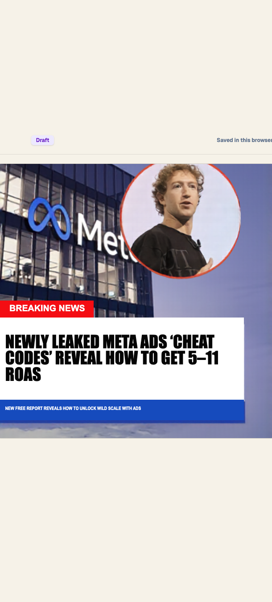

Original reference
The ad Wiggly must turn into an editable Format.
The current pipeline finds the right pieces, but its background repair smears large photo areas. RevealLayer already produced the missing clean background on this exact reference. The next code change should replace only that broken step.
Honest result: the captured RevealLayer output and the local Maker editing flow work, but the required live end-to-end verification is still unfinished. A second GPU attempt proved the direct SSH setup and downloaded the complete model in under one minute, but the GPU was rented too early and remained metered during unrelated local setup. It was stopped before a new reconstruction ran. No David’s Cookies ad below is presented as a winner because none passed the real live pipeline.
The ad Wiggly must turn into an editable Format.

Wiggly correctly found the headline, proof line, building, logo, and Zuckerberg.

The old local inpaint leaves a giant red-and-white hole. This is not usable.

The sky is restored while the building, Meta sign, story chrome, and all other content stay intact.

Zuckerberg becomes a transparent asset that can be moved or replaced.

Putting the clean background and subject back together reproduces the original.

The subject inset can be selected, uploaded, searched, and swapped from visible controls.

The subject is an editable layer and the captured RevealLayer background remains clean underneath.

Human-style number entry now commits on blur or Enter, and the headline fits the resized box.